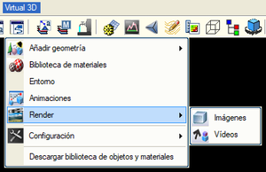
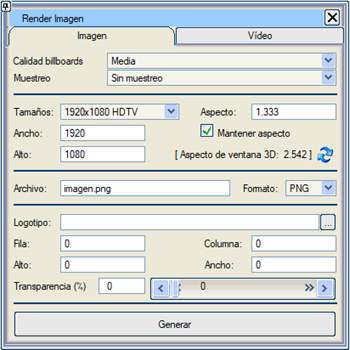
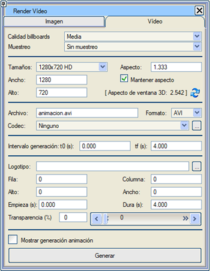

| |
|
Render
|
|
Genel Bilgiler  Render, bir sahnenin geometrisi, ışıkları, kameraları ve ortamından görüntüler oluşturma işlemidir. Oluşturulan görüntüler dosyalara kaydedilir veya bir video oluşturmak için bir araya getirilir. Render moduna, Sanal 3B menüsündeki  düğmesi aracılığıyla erişilir. düğmesi aracılığıyla erişilir.
Genel Seçenekler İsim: render modunu bir isimle tanımlamayı sağlar. Billboard kalitesi: billboard görüntülerinin dokularının hangi kalitede alınacağını seçmeyi sağlar. Şu seçenekler olabilir: taslak, orta veya yüksek. Örnekleme: Görüntünün her bir pikseli için hesaplanan renk interpolasyon piksellerinin sayısını belirtir. Şu seçenekler olabilir: Örneklemesiz (1x), 2x, 4x veya 8x. Örnekleme ne kadar yüksek olursa, nihai görüntünün kalitesi o kadar iyi olur, ancak oluşturulması da o kadar fazla zaman alır. 
Görüntü Aşağıda statik görüntüler oluşturma seçenekleri gösterilmektedir. Genişlik: Görüntünün genişliğini piksel olarak belirtir. Yükseklik: Görüntünün yüksekliğini piksel olarak belirtir. En-boy oranı: Sonuçta ortaya çıkan görüntünün en-boy oranını (genişlik/yükseklik) belirtir. En-boy oranını koru: İşaretliyse, genişlik veya yükseklik değiştirildiğinde diğer değer, oranın aynı kalması için yeniden hesaplanır. 3B pencere en-boy oranı: 3B görüntüleyicinin en-boy oranını belirtir ve bunu oluşturulacak görüntünün en-boy oranı olarak ayarlamayı sağlar. Oluşturulan görüntülerin 3B görüntüleyici penceresiyle aynı boyutta olması veya aynı en-boy oranını koruması gerekmez. Ekran boyutundan daha küçük olmaları bile gerekmez. Maksimum boyutları belleğe ve grafik sistemine bağlıdır; örneğin, 19200x12000 piksellik görüntüler elde edilmiştir. Sorun şu ki, 3B görüntüleyici ile oluşturulan görüntü arasındaki en-boy oranı değiştiğinde, görüntünün kenarlarında 3B görüntüleyicide görünmeyen şeyler olabilir ve tam tersi de geçerlidir. 3B görüntüleyicinin merkezi ile oluşturulan görüntünün merkezi ise çakışır. Boyutlar: Önceden yapılandırılmış bir dizi görüntü boyutu belirtmek için seçici. Format: Sonuçta ortaya çıkan görüntüyü kaydedecek dosyanın formatını belirtir. Dosya: Sonuçta ortaya çıkan görüntüyü kaydedecek dosyanın adını belirler. Eğer bu işlem daha önce yapılmışsa, aynı zamanda son kaydedilen görüntünün adıdır. Logo: Logo olarak kullanılacak bir görüntü belirtmeyi sağlar. Görüntülerde veya videolarda otomatik olarak görünmesi için bir şirket logosu eklenebilir. Logonun konumu ve boyutu ile şeffaflığı belirtilebilir. Satır, Sütun: Logonun sonuçta ortaya çıkan görüntüdeki konumunu belirtir. Yükseklik, Genişlik: Logonun boyutunu belirtir. Şeffaflık (%): Oluşturulan görüntünün logonun "arkasında" görülebilmesi için logoya bir şeffaflık derecesi vermeyi sağlar. Oluştur: İstenen seçenekler ayarlandıktan sonra, bu düğme sonuçta ortaya çıkan görüntüyü, öngörülen logo ile ve belirtilen dosyada oluşturur. Video Aşağıda Sanal 3B'den video oluşturma seçenekleri açıklanmaktadır. Genişlik: Video görüntüsünün genişliğini piksel olarak belirtir. Yükseklik: Video görüntüsünün yüksekliğini piksel olarak belirtir. En-boy oranı: Sonuçta ortaya çıkan video görüntüsünün en-boy oranını (genişlik/yükseklik) belirtir. En-boy oranını koru: İşaretliyse, genişlik veya yükseklik değiştirildiğinde diğer değer, oranın aynı kalması için yeniden hesaplanır. Boyutlar: Önceden yapılandırılmış bir dizi video görüntüsü boyutu belirtmek için seçici. Format: Videonun çıktı formatını seçmeyi sağlar. AVI formatı kullanılır, ancak her bir karenin görüntülerinin BMP formatında oluşturulması da belirtilebilir. Codec: Videonun sıkıştırılacağı codeci belirtmek için seçici (AVI formatı için). Render video penceresinde, görüntülerin oluşturulması bittiğinde kullanmak istediğimiz sıkıştırma codecini seçme seçeneğimiz vardır, bu sayede daha sonra codec seçim iletişim kutusunun görünmesini engelleriz. 
 Codec'ler,
bilgisayarda yüklü olan ve kabul edilebilir bir görüntü kalitesini koruyarak videonun mümkün olan en küçük dosya boyutunu kaplaması için sıkıştırılmasını sağlayan programlardır (ancak hepsi aynı şekilde sıkıştırmaz veya aynı kaliteyi vermez).
"Hiçbiri" seçilirse, video, oluşturuldukları gibi karelerin görüntülerinin ardışık olarak sıralanmasından oluşur, ancak boyut çok büyük olabilir ve oynatma hızı ciddi şekilde düşebilir.
İnternette codec'ler aranabilir, ancak videoyu oynatacak kişinin de aynı codece sahip olduğundan emin olunmalıdır, aksi takdirde hiçbir şey göremez.
Tüm codec'ler video için herhangi bir görüntü boyutunu desteklemez, çoğunun her bir boyut için 4'ün katı olması gerekir.
Bu nedenle video boyutu seçicisinde en yaygın boyutlar sunulmaktadır.
Seçilebilir boyutlardan biri FullHD (1920x1080) olarak bilinir. Codec'ler,
bilgisayarda yüklü olan ve kabul edilebilir bir görüntü kalitesini koruyarak videonun mümkün olan en küçük dosya boyutunu kaplaması için sıkıştırılmasını sağlayan programlardır (ancak hepsi aynı şekilde sıkıştırmaz veya aynı kaliteyi vermez).
"Hiçbiri" seçilirse, video, oluşturuldukları gibi karelerin görüntülerinin ardışık olarak sıralanmasından oluşur, ancak boyut çok büyük olabilir ve oynatma hızı ciddi şekilde düşebilir.
İnternette codec'ler aranabilir, ancak videoyu oynatacak kişinin de aynı codece sahip olduğundan emin olunmalıdır, aksi takdirde hiçbir şey göremez.
Tüm codec'ler video için herhangi bir görüntü boyutunu desteklemez, çoğunun her bir boyut için 4'ün katı olması gerekir.
Bu nedenle video boyutu seçicisinde en yaygın boyutlar sunulmaktadır.
Seçilebilir boyutlardan biri FullHD (1920x1080) olarak bilinir.Dosya: Sonuçta ortaya çıkan videoyu kaydedecek dosyanın adını belirler. Eğer bu işlem daha önce yapılmışsa, aynı zamanda son kaydedilen videonun adıdır. Logo: Logo olarak kullanılacak bir görüntü belirtmeyi sağlar. Görüntülerde veya videolarda otomatik olarak görünmesi için bir şirket logosu eklenebilir. Logonun konumu ve boyutu ile şeffaflığı belirtilebilir. Videolar söz konusu olduğunda, logonun görünmeye başlayacağı saniye ve ne kadar süreyle görünür olacağı belirtilebilir. Satır, Sütun: Logonun sonuçta ortaya çıkan video görüntüsündeki konumunu belirtir. Yükseklik, Genişlik: Logonun boyutunu belirtir. Başlangıç (sn): Logonun görünmeye başladığı an. Bitiş (sn): Logonun görünmesinin sona erdiği an. Şeffaflık (%): Oluşturulan görüntünün logonun "arkasında" görülebilmesi için logoya bir şeffaflık derecesi vermeyi sağlar. Animasyon oluşturmayı göster: Videoya gönderilen karenin aynısının oluşturulmasının 3B görüntüleyicide gösterileceğini belirtir. Oluştur: İstenen seçenekler ayarlandıktan sonra, bu düğme sonuçta ortaya çıkan videoyu, öngörülen logo ile ve belirtilen dosyada oluşturur. Avi'yi yeniden oluştur: Geçici dosyaların kaydedilmiş ve silinmemiş olması durumunda, bu dosyalarla bir video oluşturmayı sağlar AVI formatında. Bir
video oluştururken, bu videoyu yapmak için yüzlerce, belki de binlerce görüntü oluşturulması gerektiğini (saniyede 25 görüntüde, 10 saniyelik video 250 görüntü, bir dakikalık video 1500 görüntü, 3 dakika 4500 görüntü gerektirir...) dikkate almak önemlidir, bu da önemli bir zaman ve disk alanı tüketimi anlamına gelir (FullHD 1920x1080 piksellik bir görüntü, her piksel için 3 bayt ile 5,9 MB'den biraz daha fazla yer kaplar).
Bu nedenle, video oluşturmak için belirli bir grafik kapasitesine, işlem gücüne, belleğe ve disk alanına sahip bir bilgisayara sahip olmak önemlidir.
Video kalitesini korumak ve her kareyi oluşturmak için çok uzun süreler gerektirmemek amacıyla görüntü oluşturma kalitesini ayarlamak da önemlidir.
Animasyonun oluşturulmasını göstermek, videonun oluşturulmasının nasıl ilerlediği hakkında bir fikir edinmek için çok yararlı bir seçenektir, ancak her görüntünün 2 kez oluşturulmasını gerektirir; biri 3B görüntüleyici için, diğeri video için.
Video çok küçük veya bilgisayar çok hızlı olmadıkça kullanılması tavsiye edilmez. |